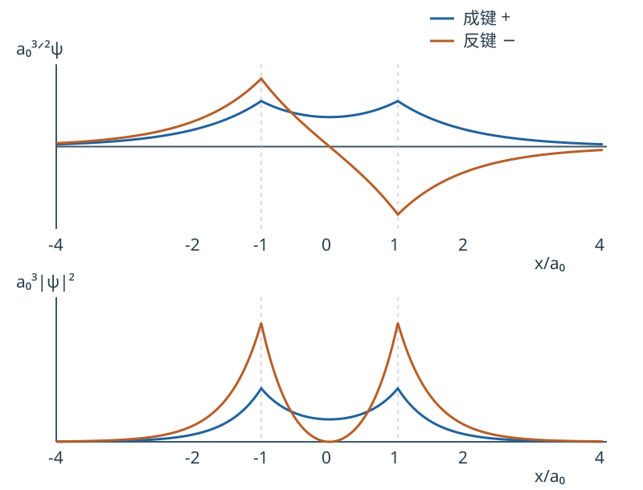

19.1 分子结构
由原子到分子，不只是把两个带电小球靠近。电子的量子态、核间排斥、泡利原理共同决定能量。本节按教材的离子键、共价键和分子形状推进，同时为下一节的振动势阱作准备。
核对范围：已对照教材纸335—339页，合并重复的势能最低点讲解，补电子总能量、轨道重叠归一化、键合范围和数值检查。偶极矩与比例、近似轨道归一化及四面体夹角均已独立复算。未见出版社答案。
一、势能最低点里已经包含电子的量子运动
对双原子体系，先把两核固定在距离R，求电子状态及其能量εₑ(R)，再加核间库仑排斥，得到对核的运动起作用的有效势能曲线：
固定核近似是因为核通常比电子重、运动慢；不是说实际原子核永远静止。εₑ已经包含电子动能和电子相关相互作用，不能只拿“电子在核间的吸引势”替代整个总能量，也不能把核排斥重复加两遍。
若U在R₀附近有光滑极小值，FR=−dU/dR，所以U′(R₀)=0。普通非退化极小点还满足k=U″(R₀)>0，微小偏离q=R−R₀时：
R较大时力向减小R的方向，R过小时力向增大R的方向。若二阶导恰为0，要看更高阶，不能仅凭曲率测试否定所有平坦极小点。原新编平衡例与原自测在这里合并；R₀是平衡键长，不是核测量位置永远不变。
分子能否稳定束缚，还要比较解离终态。取相同终态的U(∞)，井底深度Dₑ=U(∞)−U(R₀)；若从实际振动基态Ev=0出发，解离能D₀=U(∞)−Ev=0。低能简谐近似下D₀≈Dₑ−ℏω/2，所以“势阱深度”和“从振动基态测到的解离能”不能混称。终态是中性原子还是带电离子，也必须写清。
二、离子键：电子转移的代价与库仑吸引同时算
以Na、Cl为例，Na失电子成为Na⁺，Cl得电子成为Cl⁻。把相距无穷远的中性原子总能量设为0，电子转移需付能量Δ=INa−ACl，其中I为电离能，A为获得电子时放出的能量大小。教材曲线给Δ约1.5eV，不能因为最终有吸引就漏掉这项代价。
C=e²/(4πε₀)≈1.440eV·nm。
暂忽略短程排斥时，Δ与C/R相抵消的尺度Rc≈C/Δ≈0.96nm，与教材“约1nm”一致。该尺度不是平衡键长；真正最低点还取决于短程排斥、电子重叠和实际电子态。离子对在无穷远的能量是Δ，不是刚才选的中性原子零点。
一个可独立检查的排斥模型：为什么会有稳定间距
取新编模型U=Δ−C/R+B/Rⁿ，B>0、n>1（n是排斥幂指数，不是电子主量子数）。由U′=C/R²−nB/Rⁿ⁺¹=0，得nB=CR₀ⁿ⁻¹；代回二阶导：
所以短距排斥增长得比1/R快，产生稳定极小值。这里B和n未按真实NaCl拟合，只用来解释机制，不能拿这个示例声称算出了实验键长。
教材数值：偶极矩和“电离度”
对两个等量异号点电荷±q、间隔R，电偶极矩大小p=qR，单位C·m，方向从负电荷中心指向正电荷中心。完全转移一电子的点电荷模型给p全离子=eR。
p全离子≈3.85×10⁻²⁹C·m；
教材取e≈1.6×10⁻¹⁹C时写3.84×10⁻²⁹C·m。
用教材引用的p实≈3.00×10⁻²⁹C·m，按有效点电荷模型：
η=p实/(eR₀)≈0.780，约78%。
教材核对提示：纸335、339把这个例子多次写为“NaCl晶体”。这里0.24nm与约3×10⁻²⁹C·m适合讨论气相双原子NaCl分子，不能把一个分子的p直接当成整块晶体的永久偶极矩。实际查阅的NIST双原子分子数据列²³Na³⁵Cl的rₑ≈2.360795Å=0.2360795nm，并给振动态相关的分子偶极矩表达式；其v=0约9.001Debye，约3.002×10⁻²⁹C·m。用较精细分子数据代比约为79%，与教材粗略结论接近；但按教材0.24nm、3.00×10⁻²⁹直接算是约78%，不强行写成精确79%。
η是“等效两点电荷模型”的指标，不代表电子每一时刻以78%的概率属于一个原子，也不是唯一严格定义的成键百分比。晶格中每个离子还受周围许多离子作用，孤立离子对模型要另加晶格效应；晶体与气相分子不可混用。
三、共价键的起点：H₂⁺的一个电子、两个原子核
固定两质子，取两核连线中点为原点，a、b位于±R/2。H₂⁺只有一个电子；不必让两个电子先配对，已经可以讨论成键，因此“共价成键必须先有一对电子”不是普适起点。两核距离较远时，电子可近似用以a或b为中心的氢1s原子轨道φₐ、φᵦ描述。
选两轨道为实函数、各自归一，定义重叠S=∫φₐφᵦdV。R有限时它们一般不正交，S≠0，所以教材省略常数的φₐ±φᵦ应补为：
ψ₋=(φₐ−φᵦ)/√[2(1−S)]。
归一化检验：∫|φₐ±φᵦ|²dV=1+1±2S。近似基态用对称组合，另一组合是反对称轨道；此处是一个电子的空间反演对称性，不要与上一章“交换两个全同电子的总态反对称”混为一谈。
两核等价时，φₐ(x)=φᵦ(−x)，因此ψ₊为偶、ψ₋为奇。核间中面上φₐ=φᵦ，ψ₋=0形成节点，ψ₊则相加。在原子轨道实正的约定下，密度中的交叉项±2φₐφᵦ说明核间密度为何增强或削弱：

从密度图到能量还缺哪一步？
密度图说明干涉，但不能只凭“核间电子多”就忽略动能与核排斥。记固定核电子哈密顿量的Hₐₐ=⟨φₐ|Ĥₑ|φₐ⟩=Hᵦᵦ，实的Hₐᵦ=Hᵦₐ，代入能量期望：
U±(R)=ε±(R)+C/R。
对本节H₂⁺的1s近似，组合后的总能量曲线表现出较低的成键支和较高的反键支；成键支在适当R出现最低点。ψ₋的节点还意味着空间变化较快、动能代价不同。两核非常远时S→0、耦合趋弱，两组合能量趋同；R有限时不能强行把归一化常数都取1/√2。
教材图19-5给H₂⁺的平衡距离约0.1nm、成键谷深约2.7eV，是用于认识曲线的近似数。它不是本节用两个未优化1s函数已精确算出的实验结果；反键图也只指这里所讨论的电子支，不是宣称所有高激发态都无法束缚。
四、加更多电子：容量受泡利限制，能量还要重新计算
一个空间分子轨道最多配两种相反自旋投影。H₂的两个电子可填低能成键轨道，空间部分对称，配自旋单重态保证总态反对称。H₂⁺有一个成键电子，H₂有两个，但电子间排斥和轨道重排同时改变能量，所以不能把H₂⁺谷深简单乘2就称H₂精确解离能。教材给H₂约4.5eV，应使用时说明能量起点，不把D₀与Dₑ混用。
简单分子轨道占据模型中，键级可记(N成键−N反键)/2：H₂⁺为1/2，H₂为1；若四电子把一对成键、反键轨道都填满，键级为0。这解释了闭壳层原子通常难形成此类强共价键，但不排除更弱相互作用或其他电子态。
教材用“第三个电子不能再填同一成键轨道”解释H₃不按这种简单图像形成稳定中性分子。严谨说，泡利只禁止在同一空间轨道再放第三电子，不能单凭这个容量论证，排除一切三核离子、激发态或其他多中心轨道。新的体系必须用其实际哈密顿量重新分析。
五、未配对电子数是入门线索，不是完整分子结构计算
教材图19-6列的孤立原子组态可先按泡利与洪特规则核对：Li为1s²2s¹；He为1s²；O为1s²2s²2p⁴，有两个未配对p电子；N为1s²2s²2p³，有三个；C基态为1s²2s²2p²，有两个。它们帮助理解Li₂、H₂O、NH₃等成键趋势，不能替代完整分子轨道与总能量分析。
比如用两个互相垂直的裸p方向直接解释水，只会得到90°的图像；实际水的弯曲结构涉及整个价层电子分布。氨的三角锥形也不能简单当成三个互相垂直的刚性p棍。教材给NH₃约107.3°、CH₄约109.5°，这里把这些当分子几何结果，不假称已从未配对电子个数直接算出。
碳的四个等价键：用四面体方向看为何是109.5°
教材用2s电子“激发到2p”引入四价。它是构造键合态的一种入门记账：孤立原子的激发需能量，成键后的能量降低须一起比较，不代表每个甲烷分子形成时都必须先发生一段独立的原子激发过程。
常用sp³杂化描述把s、pₓ、pᵧ、p_z重新线性组合成四个等价定向函数，例如(s+pₓ+pᵧ+p_z)/2及另三种合适符号组合。它们沿(1,1,1)、(1,−1,−1)、(−1,1,−1)、(−1,−1,1)方向。任两向量点积为−1、长度均为√3：
这是正四面体的几何夹角，与教材CH₄的109.5°相符；它解释相同四个方向的几何关系，不是从头精确求解所有多电子能量。杂化是同一轨道空间的基变换，不是凭空多出电子。
离子与共价成分常共存。分子偶极矩由整个电荷分布和几何形状决定：不同键的向量可抵消，所以不能仅由“含不同元素”断言整体有永久偶极矩；对多原子分子也不能拿总p随意除某一条键长，就得到那条键唯一的离子百分比。
六、自测与接续
1．只知U′(R₀)=0，是否已知分子稳定？
还不够，可能是极大点、平坦点；检查附近是否增能、恢复力及解离终态。普通极小点用U″>0判断。量子核的零点振动也使核不永远停在R₀。
2．φₐ、φᵦ各自归一，和除以√2是否一定归一？
不一定。若重叠S≠0，和的范数平方为2(1+S)，差为2(1−S)；需除相应平方根。原子轨道各自归一不表示相互正交。
3．ψ₋为负的地方，概率是否为负？
不是。负号是相对于另一分量的相位，概率密度为|ψ₋|²≥0。节点处才为0；相对相位通过叠加改变核间密度。
4．测得p小于eR，能否直接断言电子只转移了某个唯一百分比？
只能在指定有效点电荷模型里作q有效=p/R的描述。真实连续电荷分布和“离子成分”分解还涉及模型；分子偶极与晶体极化也不是同一对象。
下一节分子的转动与振动能级把这里的R₀、势能曲率和零点振动变成可算能级与光谱。练习见习题19。